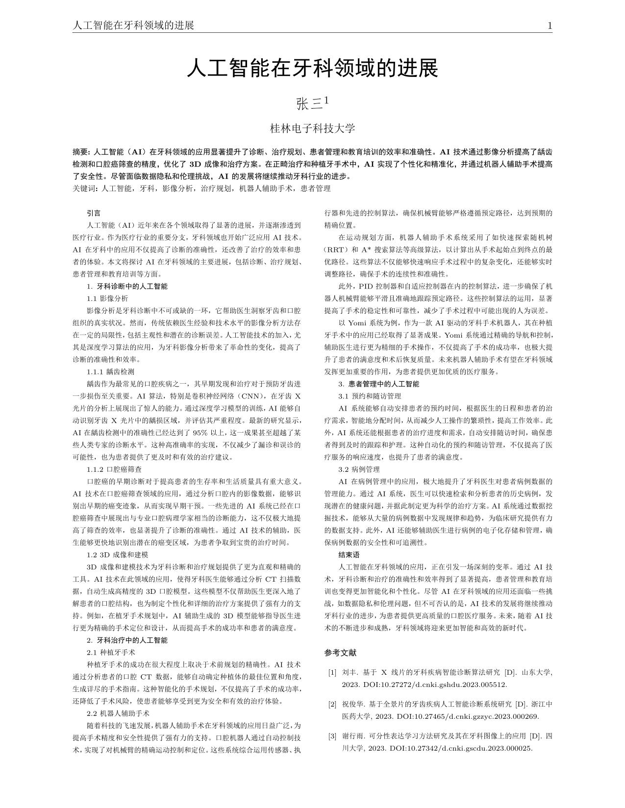

论文写作利器Latex
介绍
Latex 最初的设计目标是分离内容与格式，以便作者能够专注于内容创作而非版式设计，并能以此得到高质量排版的作品。借助它的上百条指令，允许用户在几天甚至几小时内得到高质量的排版作品。

使用
笔者使用的Latex编辑软件为Texstudio。
如果嫌配置本地环境麻烦，可使用在线网站Overlaef。
详细的入门教程可参考一大佬的git仓库，里面提供了Linux、Windows、MacOS三端编译的例程与基本用法。
构成
一篇Latex文章由三个部分构成:
- 文档类声明
文档类声明定义了文档的整体格式和类型，比如文章、报告、书籍等。它通常是LaTeX文档的第一行代码。1
\documentclass[⟨options⟩]{⟨class-name⟩}
- 导言区
导言区包含所有在文档主体前需要设置的内容，如加载宏包、定义新命令、设置页面格式等。 - 文档主体
文档主体包含实际的文档内容，并且必须包含在 \begin{document} 和 \end{document} 环境之间。
完整例子如下：1
2
3
4
5
6
7
8
9
10% 文章类声明
\documentclass[twocolumn]{article}
%导言
\usepackage[UTF8]{ctex}%在LaTeX文档中加载 ctex 宏包
%文章主体
\begin{document}
“你好，世界！”来自 \LaTeX{} 的问候。
\end{document}论文模板
包含了封面页、目录页与正文1
2
3
4
5
6
7
8
9
10
11
12
13
14
15
16
17
18
19
20
21
22
23
24
25
26
27
28
29
30
31
32
33
34
35
36
37
38
39
40
41
42
43
44
45
46
47
48
49
50
51
52
53
54
55
56
57
58
59
60
61
62
63
64
65
66
67
68
69
70
71
72
73
74\documentclass[a4paper,12pt]{article}
\usepackage[UTF8]{ctex} % 加载 ctex 宏包并指定 UTF-8 编码
\usepackage{graphicx} % 加载图形处理宏包
\usepackage{geometry} % 加载页面布局宏包
% 设置页面边距
\geometry{
top=2.5cm,
bottom=2.5cm,
left=3cm,
right=3cm
}
\begin{document}
% 封面页
\begin{titlepage}
\centering
\vspace*{2cm} % 用于在垂直方向上插入空白空间
\Huge
\textbf{我的第一篇中文LaTeX文章}
\vspace{1.5cm}
\LARGE
\textbf{Hello World}
\vspace{2cm}
\Large
作者名字
\vfill
\Large
指导教师：某某某
\vspace{0.8cm}
\Large
桂林电子科技大学
\vspace{0.8cm}
\Large
日期：\today
\vspace{1cm}
\includegraphics[width=0.3\textwidth]{example-image} % 插入图片，例如学校徽标
\end{titlepage}
% 生成目录
\tableofcontents
\newpage
\section{引言}
这是引言部分的内容。这里可以写中文内容。
\section{数学公式}
这是一个行内公式：$E=mc^2$。
这是一个独立公式：
\begin{equation}
a^2 + b^2 = c^2
\end{equation}
\section{结论}
这是结论部分的内容。
\end{document}双栏论文出版物模板
本模板使用TexStudio + Xelatex引擎编译
在选项->设置Texstudio->构建->默认编译器中更改引擎1
2
3
4
5
6
7
8
9
10
11
12
13
14
15
16
17
18
19
20
21
22
23
24
25
26
27
28
29
30
31
32
33
34
35
36
37
38
39
40
41
42
43
44
45
46
47
48
49
50
51
52
53
54
55
56%导言设置
\documentclass[10pt]{article}
\usepackage{amsmath,mathrsfs,amsthm, amssymb, multicol,bm, booktabs, hyperref,graphics,pdftexcmds,graphicx,tabulary,geometry,fancyhdr,setspace}
\usepackage[UTF8]{ctex}
%行间距和段间距调试
\linespread{1.5}
\setlength{\parskip}{0pt}
%页面大小调试
\geometry{left=25mm,right=25mm,top=20mm,bottom=20mm}
%页面信息设置
\pagestyle{fancy}
\rhead{\thepage}
\lhead{期刊名}
\cfoot{ }
%双栏间距调试
\setlength\columnsep{0.8cm}
%重定义参考文献的字号
\renewcommand{\refname}{\footnotesize 参考文献}
\begin{document}
\begin{center}
{\heiti\huge\textbf{人工智能在牙科领域的进展}}
\\\vspace{15pt}
{\fangsong\zihao{4}\textbf{张三}\textsuperscript{1}}\\
\vspace{5pt}
{\songti\zihao{5} 桂林电子科技大学}
\end{center}
\scriptsize
{\zihao{6}\heiti\textbf{摘要:这是摘要} }
{\zihao{5}\songti }\\
{\zihao{6}\songti\textbf{关键词:这是关键词}}
\begin{multicols}{2}
{\songti\heiti{引言}}
这是引言
{\songti\heiti{1. 这是标题}}
这是内容
\begin{thebibliography}{99}
\bibitem{Liu2023}
这是参考文献
\end{thebibliography}
\end{multicols}
\end{document}
本博客所有文章除特别声明外，均采用 CC BY-NC-SA 4.0 许可协议。转载请注明来自 DIKLE | 记录！